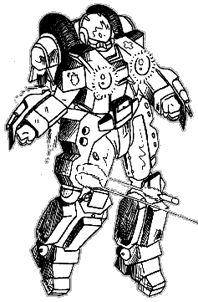

The following material is from
THE THIRD INVID
WAR, a fan supplement by
Dave Deitrich and
Chris
Meadows. Please feel free to use, copy, and distribute
it as you see fit. All we ask is that you give proper credit to us and do not
claim that it is your own work. Comments and suggestions are welcome.
THE VR-117 FIREFLY
BACKGROUND

The VR-117 Firefly Rescue Cyclone is another non-combat specialty cyclone used
as a support vehicle for the REF military. Designed during the Cyclone
Redesign Project of 2039, the Firefly is a "light" cyclone intended for use in
medical and rescue missions. Based loosely on the VR-120 Ferret combat
cyclone, the VR-117 is designed to be light and agile while retaining the
strength and protection that makes it ideal for rescue missions and damage
control. The Firefly is commonly found on REF starships and bases assigned to
maintenace and damage control teams, and are commonly issued to REF Combat Paramedics for use in
the field.
The VR-117 Firefly is somewhat similar to the VR-120 Ferret but is slightly
heavier and has heavier shielding. In battloid mode the differences are even
greater, with the Firefly having heavy plates, search lights, and various
containers mounted on the chest and torso areas. The super-hard materials
used in the construction of the VR-117 make it nearly impervious to damage
from fire and debris, and special chemical coatings on the armor plates
provide protection even from high-level radiation and nuclear fires. The
Firefly has performed admirably under the worst conditions both in space and
on land, and has become a valuable addition to both military and civilian
rescue services. The only downside to the cyclone is the high cost of the
special heat shielding the mecha uses.
Like the VR-112 Samson, the design for VR-117 Firefly became commercial
property when the design team that worked on the new generation Cyclones
retired from the REF after the Third Invid War. The design has changed little
over the years since 2039, and is currently produced by several mecha
construction companies under liscense from Samson Industries based on
Tirol. The VR-117 is now extremely common both on Earth and on Tirol, as most
fire-fighting departments own at least one of the rescue mecha.
SCHEMATICS
 Click on the icon to the left to view some pictures from the REF Cyclone
maintenance guide, document REF-5532-147-5478.
Click on the icon to the left to view some pictures from the REF Cyclone
maintenance guide, document REF-5532-147-5478.
RPG STATS
Model: VR-117 Firefly
Class: 2nd Generation M.O.S.P.E.A.D.A. Rescue Vehicle
Crew: One
M.D.C. BY LOCATION:
Motorcycle Mode Battlesuit Mode
---------------------------- ----------------------------
Headlight 5 Tires (2, rear) 5
Front Tire 5 Thrusters (rear) 50
Rear Tire 5 Forearm Shields (2) 50
Storage Box (2) 2 each Leg Shields (2) 125
Thrusters (rear) 50 Head 50
(1) Main Body 225 (1) Main Body 225
M.D.C. OF BODY ARMOR:
(2) CVR-4 (Standard Military Armor) 70
(2) CVR-3 (Standard Military Armor, Support Personnel) 50
NOTES:
- Depleting the M.D.C. of the Main Body will shut the mecha down
completely.
- Depleting the M.D.C. of the body armor will destroy it and very likely
kill the wearer (10% chance of survival).
The Second Generation Cyclones are equipped with laser resistant
ceramic armor, so laser weapons do only HALF damage. This does NOT
include any other energy attacks such as particle beams or ion blasts,
nor does it help against explosives.
CVR-4C Heavy Armor is incompatible with the VR-117 Firefly.
SPECIFICATIONS
- Motorcycle Mode:
- Maximum Speed: 210 mph (336 kmph)
- Cruising Speed: 80 mph (128 kmph)
- Turbo Boost Fwd: 40 ft (12 m) horizontal
- Turbo Boost Up: 20 ft (6 m) vertical
- Battloid Mode:
- Running: 60 mph (96 kmph)
- Flying: 180 mph (288 kmph)
- Leaping: 20 ft (6 m)
- Thruster Leap: 100 ft (30 m)
- Height:
- Battloid: 7.0 ft (2.1 m)
- Motorcycle: 3.6 ft (1.1 m)
- Width:
- Battloid: 3.4 ft (1.0 m)
- Motorcycle: 1.6 ft (0.5 m)
- Length:
- Battloid: 3.1 ft (0.9 m)
- Motorcycle: 5.0 ft (1.5 m)
Weight:200 lbs (90 kg)
- The VR-117 has detachable cargo boxes that are connected to the
rear of the bike like saddlebags. The size of each container is 18
inches tall by 20 inches wide by 18 inches deep. The VR-117 can hold 200 lbs
(84 kg) in addition to the rider. Reduce maximum speed by 20% for every
additional 25 lbs (11 kg) over the limit and add -1 to dodge.
Unlike its predecessors, the storage boxes of the new cyclones do NOT
drop off when they convert to battloid mode. Instead, the boxes are
shifted to the lower back, just below the thruster packs and covering
the butt of the pilot. The passenger, however, isn't so lucky.
Main Engine: FF-600 Fusion/Protoculture Engine
- Range:
- 2 protoculture cells will power the cyclone for approximately 12
months before needing refueling. The backup system can operate on 1
protoculture cell for 6 months at no penalty. Constant flying will
drain the protoculture cells twice as quickly for all models. As a
final backup, the cyclone can run on fusion power alone for up to 400
miles on a full tank of fuel, but maximum speed is reduced 15% and
constant flying is impossible. The fusion engine runs off hydrogen, so
any hydrogen-rich liquid (like water or ammonia) can be used for fuel.
Extra gas from the fusion engine is released through an exhaust port.
- Color Scheme:
- The standard color scheme for the VR-117 Firefly is red, orange, and
yellow, which makes them easy to spot in disaster areas where there is lots of
rubble and smoke. Since this color scheme does not work particularly well in
combat situations, VR-117 cyclones in the field are usually painted in a
camouflage pattern based on where they are stationed. Desert Cyclones are
usually painted in a tan camouflage, Arctic Cyclones are painted a flat white,
etc. The Firefly is then streamlined in light blue and orange, and is marked
with crosses and other medical symbols in an attempt to make it clear to
observers that the VR-117 is a non-combatant medical vehicle (of course the
Invid rarely take notice of this fact, unfortunately).
WEAPON SYSTEMS
- GR-103LT MINI-MISSILE LAUNCHER (2). Like the VR-120 Ferret, the
VR-117 Firefly is equipped with a smaller version of the classic GR-103
shoulder missile launchers. The payload for the GR-103LTs are 3 missiles
per launcher, giving a total of 6 mini-missiles in the shoulders. Like the
standard GR-103s, the 103LTs have been updated with newer technology which
makes them more resilient to damage and easier to repair (+20% to repair
rolls). In motorcycle mode, the two missile launchers are side by side in
the nose of the cycle. In battloid mode, the missile launchers are divided,
with one on each shoulder of the mecha.
VR-117 Fireflies stationed on REF Starships and Bases (as well as civilian
cyclones) are usually issued flame-retardant missiles for use fighting
fires. VR-117s in the field are issued armor-piercing missiles as an anti-
mecha defense, however.
- Primary Purpose: Fire Suppression
- Secondary Purpose: Anti-Mecha
- Missile Type: Any type of REF Mini-missile EXCEPT Plasma.
Armor-piercing are standard-issue for the VR-117 Firefly in the field.
- Mega-Damage: Varies with missile type.
- Rate of Fire: One at a time or in volleys of two, four, or six.
Remember, a volley counts as one melee attack regardless of the
number of missiles.
- Range: Varies with missile type; 20 ft to 1 mile.
- Payload: 3 missiles per each launcher, for a total capacity of 6.
- GR-187 HIP MISSILE LAUNCHERS (2). A new addition to modern
cyclones, the VR-117 Firefly comes automatically equipped with a
pair of GR-187s. These weapons are mounted on the hip/upper leg
shields in battloid mode and in the lower back of the cyclone in
motorcycle mode. It appears as four small tubes built directly into
the armored plate. The missiles can only fire in battloid mode.
Like the GR-103LTs, the GR-187s are usually loaded with flame-retardant
missiles when the VR-117 is stationed on a spaceship or base. In the field
however the GR-187s are usually loaded with smoke or tear gas missiles for
use in concealment and for identifying an LZ (landing zone).
- Primary Purpose: Fire Suppression
- Secondary Purpose: Miscellaneous
- Missile Type: Any type of REF Mini-missile EXCEPT Plasma.
Smoke/Tear Gas are standard-issue for the VR-117 Firefly in the field.
- Mega-Damage: Varies with missile type.
- Rate of Fire: One or two at a time.
- Range: Varies with missile type; 20 ft to 1 mile.
- Payload: 4 missiles per each launcher, for a total capacity of 8.
- MODULAR WEAPON SYSTEMS. As with all REF Cyclones, the arm shields
of the VR-117 Firefly are designed to interface with one of the GR-series
weapon modules. One weapon module can be mounted on each forearm shield,
and it is not necessary to mount the same modules on each shield. The
Cyclone's onboard computer system will automatically recognize which weapon
module is installed and adjust the HUD displays on the pilot's helmet
accordingly. Any GR-series weapon module can be used.
Typical VR-117s are assigned two
GR-117 RESCUE HOOK units if stationed on a base or spaceship, or one
GR-117 unit and one GR-220 BEAM
CANNON/SMG unit if in the field. Different weapons may be substituted
if approved by a commanding officer. Click HERE for a complete listing of cyclone weapon
modules.
- Hand-to-Hand Combat. Punch does 1D4 M.D. Kick does 1D6 M.D. (The
VR-117 Firefly has an equivalent strength of PS 50) Leap Kick
does 2D4 M.D. Body Flip or Body Block does 1D4 M.D.
- Any type of hand-held weapon can be fired by the pilot while in
cyclone armor, including the new Gallant
1000 Multi-Weapon System.
STANDARD SENSORS AND EQUIPMENT FOR ALL MILITARY CYCLONES
- LASER-RESISTANT CERAMIC COATING: 1/2 damage from laser attacks.
- ENHANCED RADAR WITH HEADS-UP DISPLAY: Can identify
and track up to 40 different targets. Range: 10 miles.
- TARGETING COMPUTER: Uses helmet display instead of retractable
sensor of older models. Provides the pilot with +3 to strike with
missiles and +2 to strike with other weapon systems (Beam Cannons,
Lasers, etc.). Range: 4000 ft (609 m).
- RADIO COMMUNICATIONS: Boosts standard radio in CVR-series armors.
Range: 10 mile (16 km).
- MISCELLANEOUS INDICATORS: Altitude, Speed, Power status, Time,
Date, Direction, etc. All controlled by on-board computer.
- TINTED HELMET VISOR
SPECIAL SENSORS AND EQUIPMENT FOR VR-117 FIREFLY CYCLONES
- HEAVY HEAT SHIELDING: The Firefly's armor is chemically treated and
can resist heat up to 500 degrees centigrade. Normal fires do no damage,
and plasma and nuclear fires do only 1/3 damage. This armor is VERY
expensive, and is only standard issue on the VR-117.
- EXTENDED OXYGEN SUPPLY: Extra supplies of breathable air in the
armor can allow the pilot to survive up to 48 hours in a vacuum, or can be
supplied to others through several tubes in the back of the mecha. There
is also a reservoir of pure oxygen available for treating victims of smoke
inhalation.
- HEAT-SHIELD BLANKETS: The Cyclone is equipped with two man-
sized blankets of a remarkable material that is non-combustible and
resists heat up to 200 degrees centigrade. These blankets can be used to
protect victims while extracting them from the fire.
- SEARCHLIGHTS: The Firefly contains two powerful searchlights
mounted on the front of the cyclone in motorcycle mode and on the chest in
battloid mode. These lights can illuminate up to 600 ft (180 m) away and
can penetrate light smoke and dust. Very useful for finding victims in
dark places or rubble.
- RESCUE EQUIPMENT: The carrying bags of the Cyclone are always
filled with a variety of rescue equipment, such as extra rope, an MDC
crowbar, flashlights, etc.